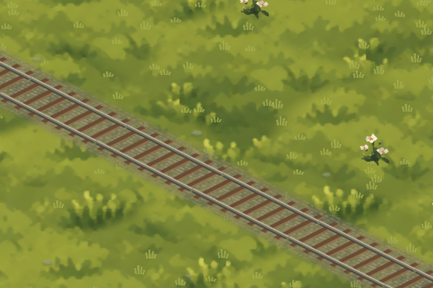
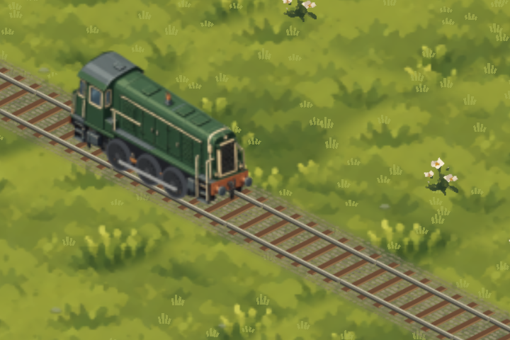
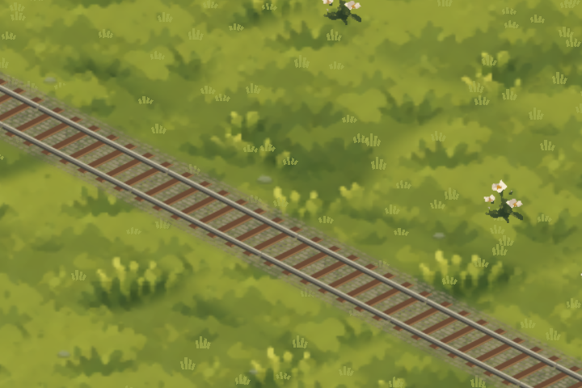
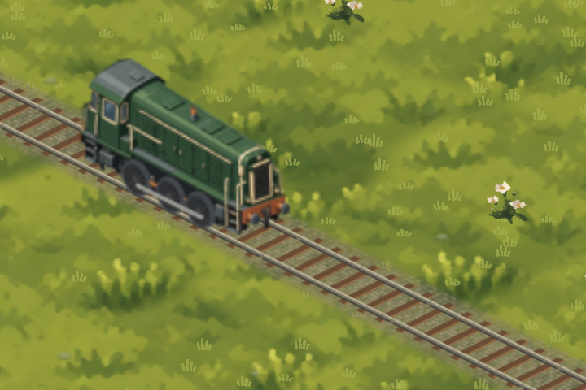
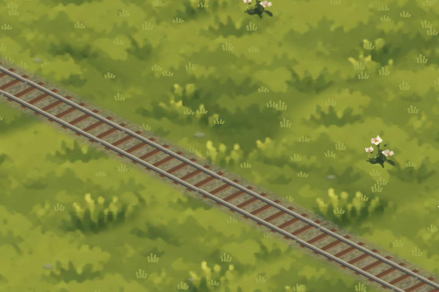

Wide sín — szélességváltozatok
Itt csak a sín, az aljak és az ágyazat szélessége változik. A mozdony azonos méretű; a kerekei még a korábbi sínhez készültek. A kiválasztott sínhez külön igazítom a javított kerekeket.
Jelenlegi wide sín


12,5%-kal keskenyebb


25%-kal keskenyebb
